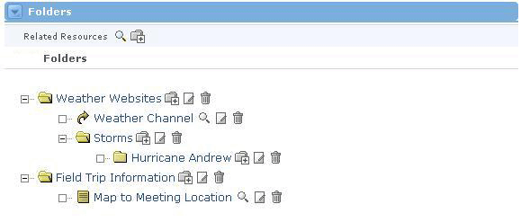

- displays an interface for adding a new element to the class folders.
- displays an interface for adding a new element to the class folders.The Folders Channel serves as a file repository for an offering's related resources. This channel allows users to upload files through the web browser and store URLs. The files are uploaded into various folders and the folders can contain other sub folders. If the user possesses the proper permissions, files and URL links may be added and deleted from the offering.

- displays an interface for adding a new element to the class folders.
From the main folder view, a user can select an individual folder or element. Clicking on the Link to a URL, opens that URL in another browser window. Clicking on an uploaded file gives the user the option to open that file.
- At the folder level, displays an interface for adding a new element the respective folder.
 - displays an interface for editing the selected folder or resource.
- displays an interface for editing the selected folder or resource.
 - displays in interface for deleting the selected element.
- displays in interface for deleting the selected element.